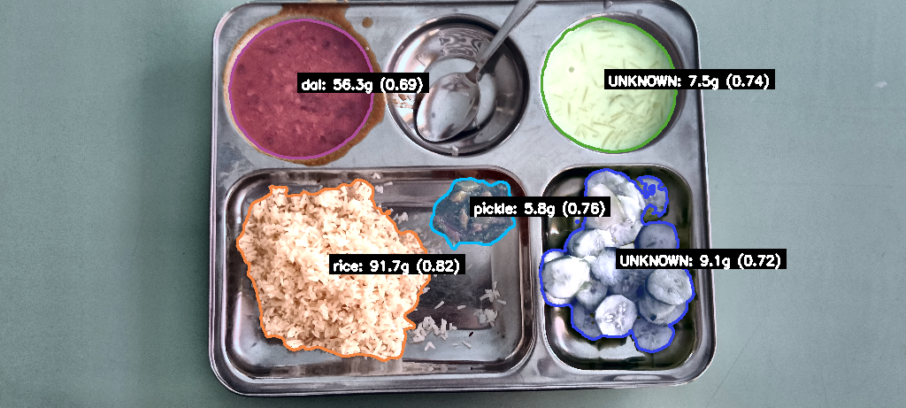

{
"resolution": "4080x1840",
"channels": 3,
"dtype": "uint8",
"expected_items": [
"dal",
"roti",
"rice",
"sabzi"
],
"plate_profile": null,
"debug": false
}
{
"food_items": [
{
"name": "rice",
"volume_ml": 92.5,
"mass_g": 91.7,
"calories": 119.2,
"protein": 2.5,
"carbs": 25.7,
"fat": 0.3,
"confidence": 0.8188,
"class_label": "rice",
"class_confidence": 0.8014,
"top_k": [
{
"label": "rice",
"confidence": 0.8014,
"raw_similarity": 0.8014
}
],
"identification_status": "recognized",
"menu_match": true,
"matched_menu_item": "rice",
"identification_confidence": 0.8014,
"segmentation_confidence": 0.8014,
"association_confidence": 1.0,
"menu_match_confidence": 1.0,
"depth_confidence": 1.0,
"scale_confidence": 0.7,
"diagnostics": {
"original_sam3_query": "rice",
"candidate_labels": [
"rice"
],
"menu_matching_result": "rice",
"final_food_label": "rice",
"confidence": 0.8014,
"uncertainty": 0.1986,
"original_mask_id": "mask_00",
"grouped_instance_id": "inst_0",
"fragment_count": 1,
"decision_reason": "SINGLE_INSTANCE"
},
"fragment_count": 1,
"food_name": "rice",
"instance_count": 1
},
{
"name": "UNKNOWN",
"volume_ml": 16.6,
"mass_g": 16.6,
"calories": 16.6,
"protein": 0.5,
"carbs": 2.5,
"fat": 0.5,
"confidence": 0.7388,
"class_label": "UNKNOWN",
"class_confidence": 0.7534,
"top_k": [
{
"label": "UNKNOWN",
"confidence": 0.7534,
"raw_similarity": 0.7534
}
],
"identification_status": "unknown",
"menu_match": false,
"matched_menu_item": null,
"identification_confidence": 0.7534,
"segmentation_confidence": 0.7534,
"association_confidence": 1.0,
"menu_match_confidence": 0.0,
"depth_confidence": 0.75,
"scale_confidence": 0.7,
"diagnostics": {
"ori[
{
"step": "Input",
"message": "Original image saved",
"params": {
"resolution": "4080x1840"
},
"elapsed_s": 0.2829,
"input_file": null,
"output_file": "original.png",
"timestamp": "2026-11-14T20:00:33.452668"
},
{
"step": "Pipeline",
"message": "Step 1 — Preprocessing & Perspective Warp",
"params": {},
"elapsed_s": null,
"input_file": null,
"output_file": null,
"timestamp": "2026-11-14T20:00:33.452668"
},
{
"step": "Quality Gate",
"message": "PASS",
"params": {
"blur_score": 67.66,
"tilt_deg": 1.0
},
"elapsed_s": null,
"input_file": null,
"output_file": null,
"timestamp": "2026-11-14T20:00:33.608831"
},
{
"step": "Preprocessing",
"message": "Complete",
"params": {
"output_size": "1024x461"
},
"elapsed_s": 0.3216,
"input_file": null,
"output_file": null,
"timestamp": "2026-11-14T20:00:33.774414"
},
{
"step": "Pipeline",
"message": "Step 2 — Compartments & Scale",
"params": {},
"elapsed_s": null,
"input_file": null,
"output_file": null,
"timestamp": "2026-11-14T20:00:33.774414"
},
{
"step": "Scale Calibration",
"message": "Fallback to bbox-based calibration",
"params": {
"cm_per_pixel": 0.04469,
"method": "bbox"
},
"elapsed_s": null,
"input_file": null,
"output_file": null,
"timestamp": "2026-11-14T20:00:33.792170"
},
{
"step": "Compartment Detection",
"message": "Scale computed",
"params": {
"cm_per_pixel": 0.04469,
"pixel_area_cm2": 0.00199746,
"compartments": 0,
"scale_confidence": 0.7
},
"elapsed_s": 0.017,
"input_file": null,
"output_file": null,
"timestamp": "2026-11-14T20:00:33.792170"
},
{
"step": "Pipeline",
"message": "Step 3 — Depth Estimation",
"params": {},
"elapsed_s": null,
"input_file": null,
"output_file": null,
"timestam| Step | Message | Params | Time |
|---|---|---|---|
| Input | Original image saved | {"resolution": "4080x1840"} | 0.2829s |
| Pipeline | Step 1 — Preprocessing & Perspective Warp | — | — |
| Quality Gate | PASS | {"blur_score": 67.66, "tilt_deg": 1.0} | — |
| Preprocessing | Complete | {"output_size": "1024x461"} | 0.3216s |
| Pipeline | Step 2 — Compartments & Scale | — | — |
| Scale Calibration | Fallback to bbox-based calibration | {"cm_per_pixel": 0.04469, "method": "bbox"} | — |
| Compartment Detection | Scale computed | {"cm_per_pixel": 0.04469, "pixel_area_cm2": 0.00199746, "compartments": 0, "scale_confidence": 0.7} | 0.0170s |
| Pipeline | Step 3 — Depth Estimation | — | — |
| Depth Estimation | Complete | — | 15.9338s |
| Pipeline | Step 4–6 — SAM 3 Food Identification & Segmentation | — | — |
| SAM3 | Identified 5 food items (2 recognized, 0 unlisted, 0 uncertain) | — | 49.0180s |
| Pipeline | Step 7 — Volume & Mass Estimation | — | — |
| Volume Estimation | Computed mass for 5 items | {"total_items": 5} | 0.0131s |
| Pipeline | ✅ Pipeline complete | {"total_food_items": 5, "avg_confidence": 0.7457, "scale_method": "bbox"} | 65.6390s |